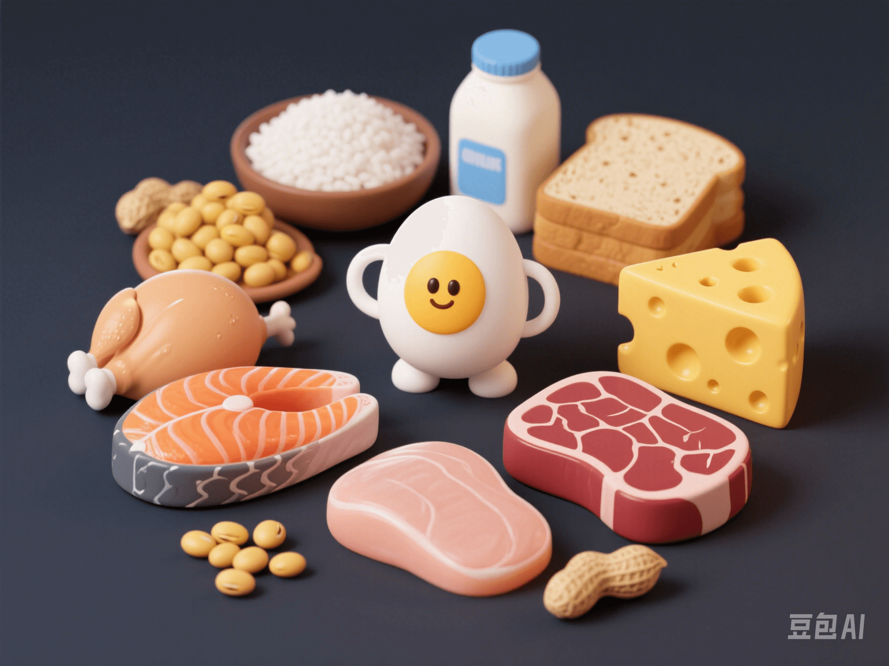

Comprehensive Guide to Protein Intake: Standards for Different Groups, Food Content Comparison, and Diet Combination Tips
PeaceLove.Top Insights :2025-04-13
Protein is the “brick” that makes up human tissues. It is essential for muscle growth, wound repair, and maintaining the immune system! However, different people have different protein requirements. Eating too much can harm the kidneys, while eating too little can lead to muscle loss. ⚖️ How can you eat just the right amount? This article will help you figure it all out!
🧍♂️🧍♀️ Protein Intake Standards for Different Groups 📊
Unit: Amount of protein required per kilogram of body weight (g/kg/day)
| Group | Recommended protein intake | Explanation |
|---|---|---|
| 🧑 Adult men | 1.0 g/kg | In normal living conditions |
| 👩 Adult women | 0.8 - 1.0 g/kg | Women generally have slightly lower requirements |
| 👵 Elderly people | 1.2 - 1.5 g/kg | To prevent muscle loss (sarcopenia) |
| 👶 Children | 1.0 - 1.5 g/kg | High demand due to growth and development |
| 🤰 Pregnant/lactating women | An additional 10 - 20g/day | To supply the fetus or breast milk |
| 🧘♀️ Women in the fat - loss period | 1.5 - 2.0 g/kg | To preserve muscle and prevent metabolic decline |
| 💪 Fitness enthusiasts | 1.6 - 2.2 g/kg | During muscle - building training |
| 🧑⚕️ Obese people (calculated based on ideal body weight) | 1.2 - 2.0 g/kg | To avoid excessive burden |
🔔 For example, a 60 - kg woman in the muscle - building period should aim for 60kg × 1.8 = 108g of protein per day.
🥚 Food Protein Content Comparison Chart 📦
| Food 🍽️ | Protein content (per 100g) | Remarks |
|---|---|---|
| 🥚 Eggs | 13g (one egg ≈ 6g) | High biological value of protein 💯 |
| 🐟 Salmon | 20g | Contains Ω - 3 fatty acids |
| 🐓 Chicken breast | 23g | A favorite in fitness meals 🏋️ |
| 🥩 Beef | 21g | Rich in iron |
| 🧀 Cheese (Cheddar) | 25g | But also high in fat! 🧈 |
| 🥛 Milk (whole - fat) | 3.3g (250ml ≈ 8g) | Easy to absorb but in small amounts |
| 🍚 White rice | 2.6g | Staples can also contribute protein |
| 🫘 Soybeans | 35g (dried beans) | The king of plant - based protein 👑 |
| 🌰 Peanuts | 26g | High in protein and fat ⚠️ |
| 🍞 Whole - wheat bread | 9g | Significantly higher than white bread |
🍱 Tips for Protein Combination 🔠
To prevent imbalanced intake, remember the following “diet tips” 🌟:
- ✅ Combine plant and animal proteins to double the absorption efficiency: “Pair beans with eggs, rice with fish, and have a bowl of milk and beans without hesitation.” 👉 Combining plant and animal proteins helps provide “complete amino acids”!
- ✅ Leave some protein for each meal, don't pile it all up at night: “Distribute protein across three meals, so it won't be crowded.” 👉 Muscle synthesis occurs throughout the day, don't just over - supplement at dinner!
- ✅ You can also supplement protein with staples: “Add tofu to rice, and fry an egg with noodles.” 👉 Protein can be found in unexpected places!
- ✅ Multiple sources are better than a single one: “Have three protein sources every day, and your muscles will stay in shape.”
🔬 Practical Tips: How to Eat Right?
- 🍗 High - quality protein sources: Eggs, dairy products, fish and shrimp, lean meat, soy products (such as tofu and soy milk)
- 🍜 Cooking methods matter: Frying can damage the protein structure. Steaming, boiling, stewing, and braising preserve more nutrients.
- 🕒 Space out your protein intake: Arrange 20 - 30g of protein per meal for optimal absorption and synthesis.
- 💧 Drink plenty of water: When on a high - protein diet, the metabolic products (such as urea) increase, so you need to ensure that the kidneys are not over - burdened.
💬 Debunking Common Myths ⚠️
- 🚫 Myth 1: Eating more protein = guaranteed muscle gain? ❗ Exercise is the core! Protein is just the “raw material”. Without “training” as the construction team, muscles won't grow!
- 🚫 Myth 2: Protein powder harms the kidneys? ❗ People with normal kidney function won't have problems when consuming an appropriate amount. The key is the word “appropriate”!
- 🚫 Myth 3: Only meat contains protein? ❗ Plant - based protein is also very powerful. Beans, nuts, and quinoa are all nutritious!
📌 Summary Quotes ✅
📍 **“Protein is the brick of life. Eat it right, and your body can be built up!”**
📍 **“Balance your three meals and have a diverse intake to let health and strength soar together.”**
💪✨ #HealthyDiet #HighProteinLife #ScientificFitness #ChildrenGrowth #ElderlyHealth
If you want, I can also help you create a personalized daily protein - combination menu. 🍽️🌈 Do you want one?